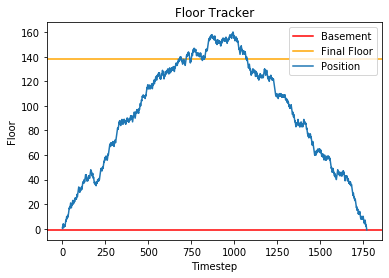

Quarantime time is the perfect time to setup a jupyter notebook powered blog and solve Advent of Code, starting with 2015. The following is a write up of how to solve and things I learved while doing so, thus some of the code is spelled out and slow! So look at the AOC reddit site for ninja level solutions.
I am trying to
- code in a readable fashion, avoiding shortcuts (easier said then done!)
- make visuals as many problems as possible.
- not mangle up jupyter notebooks too badly. Real code is written using a text editor! Unless you are Netflix, or course, or using rmarkdown.
First up, I'm importing all the libs I'll use up here:
#collapse-hide
# python essentials
import os
import re
import hashlib
import math
from pathlib import Path
from typing import List
from collections import defaultdict, namedtuple, Counter
# useful external libs
#import numpy as np
import pandas as pd
# misc utils
import requests
#from tqdm.notebook import trange, tqdm # progress bars for slow funcs
#from functools import reduce
# for plots, cause visuals
import matplotlib.pyplot as plt # goto python viz lib
import seaborn as sns # prettify matplotlib
from IPython.display import display, Markdown
# javascript plotting for interactive graphs
#import altair as alt
#import plotly.express as px
Some helper functions to avoid rewriting the same code for all the problems:
#collapse-hide
input_path = Path.home() / "code" / "adventofcode" / "inputs"
github_url = url = "https://github.com/khalido/adventofcode/raw/master/inputs"
def get_input(day:int=1, year:int=2015) -> str:
"""takes in the day, year and date, returns the input"""
try: # load from local disk
with open(input_path / f"{year}" / f"{day}.txt") as f:
data = f.read()
except: # else load from github repo
print(f"Failed to load {year}/{day}.txt from disk, trying to get from github")
url = f"{github_url}/{year}/{day}.txt"
r = requests.get(url)
if r.status_code == 200:
data = r.text
else:
print(f"Failed to load {year}.{day}")
data = None
return data.strip()
def printmd(txt="## testing"):
display(Markdown(txt))
Day 1: Not Quite Lisp
# We're standing at a inifinite building, and following instructions:( is up, ) is down to find the right floor.
This is simple - minus the ups from the downs:
inp1 = get_input(1)
inp1.count("(") - inp1.count(")")
138
A list comprehension version for kicks:
sum([1 if char == "(" else -1 for char in inp1])
138
for part 2, we need to find the first time he enters the basement while following the instructions.
floor = 0
floors = []
for i, mv in enumerate(inp1):
if mv == "(":
floor += 1
else:
floor -= 1
floors.append(floor)
if floor == -1:
printmd(f"Timesteps to reach the basement: **{i + 1}**")
break # no need to continue climbing
plt.title("Floor Tracker"); plt.xlabel("Timestep"); plt.ylabel("Floor")
plt.axhline(y=-1, label="Basement", color="red")
plt.axhline(y=138, label="Final Floor", color="orange")
plt.plot(range(len(floors)), floors, label="Position")
plt.legend(loc="upper right");
Timesteps to reach the basement: 1771

Day 2: I Was Told There Would Be No Math
How much wrapping paper is needed to wrap a bunch of presents?
We need2*l*w + 2*w*h + 2*h*l paper, and the input is the l, w and h of each present.
In the bad old days of programming, this would be the perfect place to represent the data as a list or tuple in the form [3 ,3, 9] representing [l, w, h]. But now we can use namedtuples to make it easier to understand the data:
Present = namedtuple("Present", ["l", "w", "h"])
inp2 = get_input(2).split("\n")
data2 = [Present(*[int(x) for x in i.split("x")]) for i in inp2]
data2[:4]
[Present(l=29, w=13, h=26),
Present(l=11, w=11, h=14),
Present(l=27, w=2, h=5),
Present(l=6, w=10, h=13)]
def get_present_area(p: Present) -> int:
box_area = sum([2*p.l*p.w, 2*p.w*p.h, 2*p.h*p.l])
extra_paper = math.prod(sorted(p)[:2])
return box_area + extra_paper
sum([get_present_area(x) for x in data2])
1586300
Now we need to calcuate the ribbon required, which is equal to the perimeter of the smallest face + cubic volume of the present
def ribbon(present: Present) -> int:
"""takes in present, returns length of ribbon needed to wrap"""
l, w, h = sorted(present)
return 2*l + 2*w + l*w*h
sum([ribbon(present) for present in data2])
3737498
Day 3: Perfectly Spherical Houses in a Vacuum
# Santa is delivering presents to houses, and his movements is 1 step at a time: north (^), south (v), east (>), or west (<)
inp3 = get_input(3)
dirs = {"^": (0,1), ">": (1,0), "v": (0,-1), "<": (-1, 0)}
def get_moves(data):
moves = [(0,0)] # starting point
for mv in data:
x, y = moves[-1] # x,y of current pos
xx, yy = dirs[mv]
moves.append((x + xx, y + yy))
return moves
moves = get_moves(inp3)
c = Counter(moves)
printmd(f"Santa visited **{len(c)}** unique places.")
x, y = zip(*moves)
f, ax = plt.subplots(figsize=(10,6))
plt.title(f"Santa visited {len(c)} unique places in {len(moves)} visits")
ax.plot(x,y, alpha=0.7, label="Santa's Movements"); ax.legend();
Santa visited 2565 unique places.

for part 2, we have two santas! They move alternatingly, so we can say Santa_1 does all the odd moves and Santa_2 does all the even moves:
santa_1 = get_moves(inp3[::2]) # all the odd moves
santa_2 = get_moves(inp3[1::2]) # all the even moves
two_santas = Counter(santa_1 + santa_2)
printmd(f"The two santas visited **{len(two_santas)}** unique places.")
f, ax = plt.subplots(figsize=(10,6))
plt.title(f"the two santas visited {len(two_santas)} unique places")
for name, santa in zip(("Bob", "Alice"), (santa_1, santa_2)):
x, y = zip(*santa)
ax.plot(x,y, alpha=0.8, label=f"Santa_{name}")
ax.legend();
The two santas visited 2639 unique places.

Day 4: The Ideal Stocking Stuffer
inp4 = "bgvyzdsv"
test4_1 = "abcdef" #609043
test4_2 = "pqrstuv" # 1048970
def make_hash(txt):
return hashlib.md5(txt.encode("utf")).hexdigest()
False
def day_4_1(inp=inp4, s="None", target="00000", i=0) -> int:
while not s.startswith(target):
i += 1
txt = inp + str(i)
s = make_hash(txt)
printmd(f"_{inp}_ target at position **{i:,}** ({s})")
return i
assert day_4_1("abcdef") == 609043 # tests are always a good idea
assert day_4_1("pqrstuv") == 1048970
day_4_1()
abcdef target at position 609,043 (000001dbbfa3a5c83a2d506429c7b00e)
pqrstuv target at position 1,048,970 (000006136ef2ff3b291c85725f17325c)
bgvyzdsv target at position 254,575 (000004b30d481662b9cb0c105f6549b2)
254575
Part two just changes the target sring to have one more zero so thanks to making part one a function this is easy:
day_4_1(target="000000")
bgvyzdsv target at position 1,038,736 (000000b1b64bf5eb55aad89986126953)
1038736
Day 5: Doesn't He Have Intern-Elves For This?
# We have a list of strings, and Santa has the following rules to figure out which ones are nice:
- at least three vowels (aeiou only), like aei, xazegov, or aeiouaeiouaeiou.
- at least one letter that appears twice in a row, like xx, abcdde (dd), or aabbccdd (aa, bb, cc, or dd).
- does not contain the strings ab, cd, pq, or xy, even if they are part of one of the other requirements.
vowels = "aeiou" # need vowels
bad_strings = ["ab", "cd", "pq", "xy"] # don't want these
regex = re.compile(r"([a-zA-Z])\1{1,}") # search for 2+ letters in a row
test4 = ["ugknbfddgicrmopn", "aaa", "jchzalrnumimnmhp",
"haegwjzuvuyypxyu", "dvszwmarrgswjxmb"]
def is_nice_string(txt):
vowel_count = len([char for char in txt if char in vowels]) >= 3
two_chars = len(re.findall(regex, txt)) > 0
no_bad_str = True if (sum([s3d in txt for s in bad_strings]) == 0) else False
return vowel_count and two_chars and no_bad_str
[is_nice_string(t) for t in test4] #== [False, False, True, True, True]
[True, True, False, False, False]
inp5 = get_input(5).split("\n")
print("Number of nice strings: ", sum([is_nice_string(t) for t in inp5]))
Number of nice strings: 258
for part two, the rules have changed, a nice string has these properties:
- It contains a pair of any two letters that appears at least twice in the string without overlapping, like xyxy (xy) or aabcdefgaa (aa), but not like aaa (aa, but it overlaps).
- It contains at least one letter which repeats with exactly one letter between them, like xyx, abcdefeghi (efe), or even aaa.
Note: the rest remains to be done
regex_2char = re.compile(r"([a-zA-Z])\1{1,}")
regex_3char = re.compile(r"([a-zA-Z])\1{2,}")
for txt in ["aa", "aba", "aaa"]:
print(re.findall(regex_2char, txt))
['a']
[]
['a']